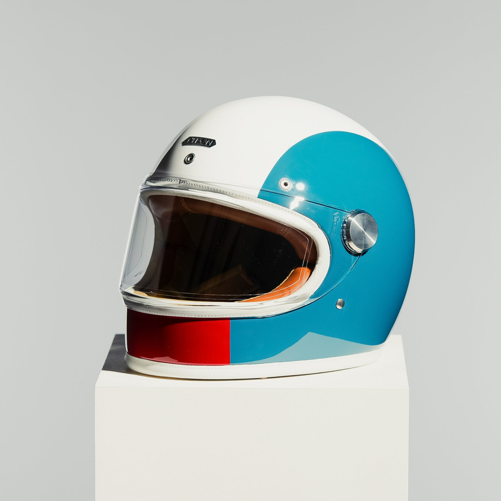
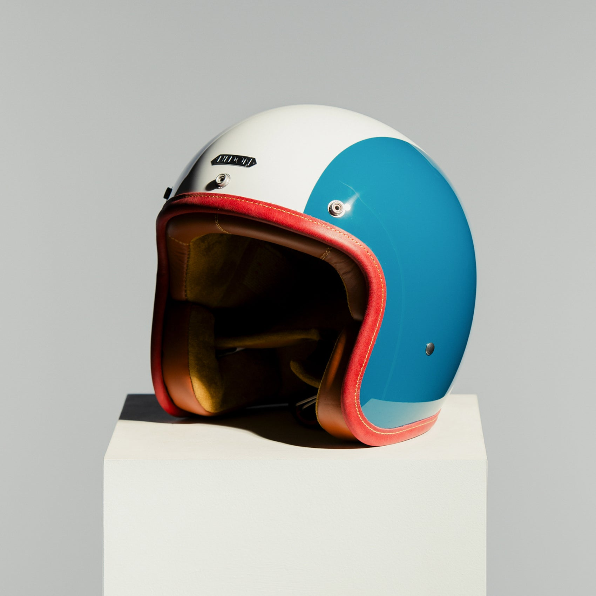

Vintage-style helmets: the 1960s look with today's standards

The 1960s helmet has a simple, low profile that still looks right on a classic bike. The aim of a vintage-style helmet is that look, without the compromises of the original.
The silhouette

- Low, rounded shell: the shape riders associate with the era.
- Restrained detail: minimal trim and a quiet finish.
- Made to order: finished by hand in London to the rider's choice.
The look of the sixties. The standard of today.
What to check
| Consideration | Note |
|---|---|
| Standard | Look for ECE 22.06, the current helmet standard. |
| Label | Read the J and P markings to see how the helmet is certified. |
| Fit | Snug and even, without pressure points. |
| Range | See the vintage motorcycle helmets collection. |
Discover Hedon luxury motorcycle helmets. Back to the Hedon home page.